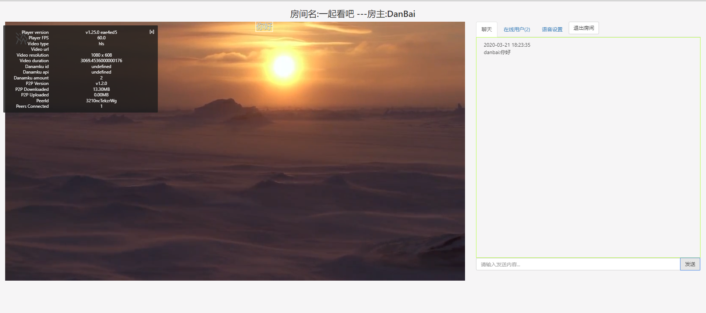
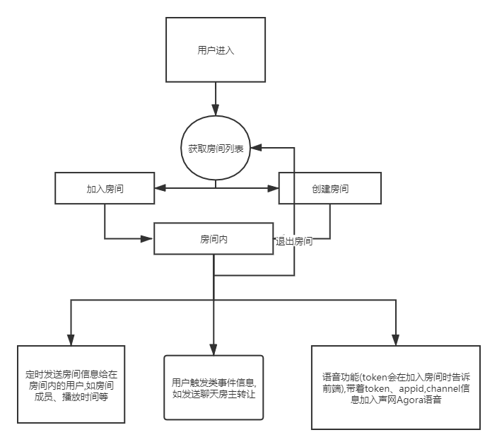

使用java websocket+agora.io实现影视同步一起观看和语音功能
- 作者:
- 淡白
- 创建时间：
- 2020-03-21 19:06:56
- 影视网站 websocket
摘要：该功能是一个影视观看平台，用户可以创建房间并邀请好友一同观看影视，同时支持房间语音。具体流程是用户创建房间后，生成一个房间ID，然后通过邀请好友加入房间。前端页面使用DPlayer播放器播放影视，使用cdnbye进行p2p加速，并使用声网Agora处理房间语音。后端使用淡白影视作为基础进行开发，使用socket进行实时通信。具体实现包括前端页面和后端socket类，后端socket管理类用于处理各种操作，例如加入房间、创建房间、发送消息等。整个流程的效果图可以参考文章中的图片。
功能介绍
用户创建房间后可邀请好友一同观看影视并支持房间语音. 线上体验地址 最后效果图:  地址:一起看
用到的东西
播放器:DPlayer p2p加速:cdnbye 语音:声网Agora 前端页面使用jq完成的单页应用. 后端基于淡白影视继续开发 socket服务
服务大致流程

实现源码
前端
后端
socket类
/**
* @author DanBai
* @create 2020-03-10 22:57
* @desc 同步影院sk
**/
package com.danbai.ys.websocket;
import com.alibaba.fastjson.JSON;
import com.alibaba.fastjson.JSONException;
import com.alibaba.fastjson.JSONObject;
import com.danbai.ys.entity.CinemaRoom;
import org.slf4j.Logger;
import org.slf4j.LoggerFactory;
import org.springframework.scheduling.annotation.Scheduled;
import org.springframework.stereotype.Component;
import javax.websocket.*;
import javax.websocket.server.PathParam;
import javax.websocket.server.ServerEndpoint;
import java.util.concurrent.ConcurrentHashMap;
@ServerEndpoint("/cinema/socket/{username}")
@Component
public class CinemaSocket {
/**
* 用户名
*/
private String username;
/**
* 房间id 0为大厅
*/
private int roomId=0;
/**
* 连接池
*/
public static ConcurrentHashMap<String, CinemaSocket> POOL = new ConcurrentHashMap<>();
/**
* 房间池
*/
public static ConcurrentHashMap<Integer, CinemaRoom> ROOM_POOL = new ConcurrentHashMap<>();
public static ConcurrentHashMap<String, Integer> DELETE_P00L =new ConcurrentHashMap<>();
/**
* 与某个客户端的连接会话，需要通过它来给客户端发送数据
*/
private Session session;
private static Logger log = LoggerFactory.getLogger(CinemaSocket.class);
/**
* 连接建立成功调用的方法
*/
@OnOpen
public void onOpen(Session session, @PathParam("username") String username) {
this.session = session;
this.username=username;
if(DELETE_P00L.containsKey(username)){
this.roomId=DELETE_P00L.get(username);
}
//加入POOL中
POOL.put(session.getId(),this);
//断线重连加房间
if(roomId!=0){
CinemaRoom room= ROOM_POOL.get(roomId);
if(room!=null){
ROOM_POOL.get(roomId).getSockets().add(session.getId());
}
}
//在线数加1
log.info("有新连接加入！当前在线人数为" + POOL.size());
CinemaSocketManagement.info(session.getId());
}
/**
* 连接关闭调用的方法
*/
@OnClose
public void onClose(Session session) {
//从POOL中删除
CinemaSocket cinemaSocket = POOL.get(session.getId());
if(cinemaSocket!=null){
DELETE_P00L.put(cinemaSocket.getUsername(),cinemaSocket.roomId);
if(cinemaSocket.roomId!=0){
CinemaSocketManagement.exitRoom(session.getId());
}
}
POOL.remove(session.getId());
log.info("有一连接关闭！当前在线人数为" + POOL.size());
log.info("房间数" + ROOM_POOL.size());
}
/**
* 收到客户端消息后调用的方法
*
* @param message 客户端发送过来的消息
*/
@OnMessage
public void onMessage(String message,Session session) {
String id=session.getId();
CinemaSocket cinemaSocket = POOL.get(id);
if(cinemaSocket!=null){
try {
JSONObject jsonObject = JSON.parseObject(message);
String type = jsonObject.getString("type");
if(jsonObject!=null&&type!=null){
switch (type){
case "info":CinemaSocketManagement.info(id);break;
case "join":CinemaSocketManagement.joinRoom(id,jsonObject.getInteger("roomId"),jsonObject.getString("pass"));break;
case "newRoom":CinemaSocketManagement.newRoom(id,jsonObject.getString("name"),jsonObject.getString("pass"));break;
case "exitRoom":CinemaSocketManagement.exitRoom(id);break;
case "roomInfo":CinemaSocketManagement.roomInfo(id);break;
case "sendChat":CinemaSocketManagement.sendChat(id,jsonObject.getString("msg"));break;
case "sendUrl":CinemaSocketManagement.sendUrl(id,jsonObject.getString("url"));break;
case "sendTime":CinemaSocketManagement.sendTime(id,jsonObject.getDouble("time"));break;
case "transfer":CinemaSocketManagement.transfer(id,jsonObject.getString("id"));break;
default:log.info(message);
}}
} catch (NullPointerException e) {
e.printStackTrace();
}catch (JSONException e){
log.info(message);
e.printStackTrace();
}
}
}
/**
* 发生错误时调用
*
* @OnError 错误消息
* @param session session
**/
@OnError
public void onError(Session session, Throwable error) {
log.error("onMessage方法异常" + error.toString());
error.printStackTrace();
}
/**
* 发送消息需注意方法加锁synchronized，避免阻塞报错
* 注意session.getBasicRemote()与session.getAsyncRemote()的区别
*
* @param message 消息
*/
public void sendMessage(String message){
synchronized (session) {
if (session.isOpen()) {
this.session.getAsyncRemote().sendText(message);
}
}
}
public String getUsername() {
return username;
}
public void setUsername(String username) {
this.username = username;
}
public int getRoomId() {
return roomId;
}
public void setRoomId(int roomId) {
this.roomId = roomId;
}
public Session getSession() {
return session;
}
public void setSession(Session session) {
this.session = session;
}
@Scheduled(cron="0 */1 * * * ?")
public void examine(){
DELETE_P00L.clear();
//删除断开的链接
POOL.forEach((id,e)->{
if(!e.session.isOpen()){
POOL.remove(id);
}
});
ROOM_POOL.forEach((id,room)->{
if(POOL.get(room.getAuthorId())==null){
if(room.getSockets().size()<2){
ROOM_POOL.remove(id);
}else {
//新房主
String newId = CinemaSocket.ROOM_POOL.get(id).getSockets().iterator().next();
//转让
if (newId != null) {
CinemaSocket.ROOM_POOL.get(roomId).setAuthorId(newId);
}
}
}
});
}
}
socket管理类
/**
* @author DanBai
* @create 2020-03-11 0:22
* @desc socket管理
**/
package com.danbai.ys.websocket;
import com.alibaba.fastjson.JSONArray;
import com.alibaba.fastjson.JSONObject;
import com.danbai.ys.async.CinemaSocketAsync;
import com.danbai.ys.entity.CinemaRoom;
import com.danbai.ys.utils.Md5;
import com.danbai.ys.utils.SpringUtil;
import io.agora.media.RtcTokenBuilder;
import io.agora.sample.RtcTokenBuilderSample;
import org.springframework.stereotype.Component;
@Component
public class CinemaSocketManagement {
/**
* 加入房间
*
* @param socketId socketId
* @param roomId 房间id
* @param pass 房间密码
*/
public static void joinRoom(String socketId, int roomId, String pass) {
JSONObject jsonObject = new JSONObject();
jsonObject.put("type", "join");
boolean ok = false;
CinemaRoom cinemaRoom = CinemaSocket.ROOM_POOL.get(roomId);
//是否需要密码
if (cinemaRoom != null && cinemaRoom.getPass() != null) {
if (cinemaRoom.getPass().equals(pass)) {
//密码正确
CinemaSocket.ROOM_POOL.get(roomId).getSockets().add(socketId);
CinemaSocket.POOL.get(socketId).setRoomId(roomId);
ok = true;
}
} else {
CinemaSocket.ROOM_POOL.get(roomId).getSockets().add(socketId);
CinemaSocket.POOL.get(socketId).setRoomId(roomId);
ok = true;
}
jsonObject.put("ok", ok);
if(ok){
//语音token
RtcTokenBuilder token = new RtcTokenBuilder();
int timestamp = (int)(System.currentTimeMillis() / 1000 + 3600);
String result = token.buildTokenWithUid(RtcTokenBuilderSample.appId, RtcTokenBuilderSample.appCertificate,
Md5.getMD5LowerCase(cinemaRoom.getName()+cinemaRoom.getId()), Integer.parseInt(socketId,16), RtcTokenBuilder.Role.Role_Publisher, timestamp);
jsonObject.put("token",result);
jsonObject.put("channel",Md5.getMD5LowerCase(cinemaRoom.getName()+cinemaRoom.getId()));
jsonObject.put("id",String.valueOf(cinemaRoom.getId()));
jsonObject.put("name",cinemaRoom.getName());
jsonObject.put("uid",Integer.parseInt(socketId,16));
}
CinemaSocket.POOL.get(socketId).sendMessage(jsonObject.toJSONString());
}
/**
* 创建房间
*
* @param socketId socketId
* @param name 房间名字
* @param pass 密码
*/
public static void newRoom(String socketId, String name, String pass) {
if(name!=null){
int id = CinemaSocket.ROOM_POOL.size() + 1;
if(pass.equals("")){
pass=null;
}
CinemaRoom cinemaRoom = new CinemaRoom(id, name, pass, socketId);
CinemaSocket.ROOM_POOL.put(cinemaRoom.getId(), cinemaRoom);
joinRoom(socketId, id, pass);
}
}
/**
* 发送大厅消息
*
* @param msg 消息
*/
public static void sendLobby(String msg) {
CinemaSocket.POOL.forEach((id, socket) -> {
if (socket.getRoomId() == 0) {
socket.sendMessage(msg);
}
});
}
/**
* 退出房间
*
* @param socketId socketId
*/
public static void exitRoom(String socketId) {
int roomId = CinemaSocket.POOL.get(socketId).getRoomId();
//房主判断
CinemaRoom room = CinemaSocket.ROOM_POOL.get(roomId);
if (room != null) {
if (room.getAuthorId().equals(socketId)) {
System.out.println("是房主");
//大于1人转让房主
if (room.getSockets().size() > 1) {
System.out.println("转让");
//退出房间
CinemaSocket.ROOM_POOL.get(roomId).getSockets().remove(socketId);
//新房主
String newId = CinemaSocket.ROOM_POOL.get(roomId).getSockets().iterator().next();
//转让
if (newId != null) {
CinemaSocket.ROOM_POOL.get(roomId).setAuthorId(newId);
}
} else {
//删除房间
CinemaSocket.ROOM_POOL.remove(roomId);
}
} else {
//退出
System.out.println("房客退出");
CinemaSocket.ROOM_POOL.get(roomId).getSockets().remove(socketId);
}
}
}
/**
* 获取大厅房间信息
*
* @param socketId socketId
* @return
*/
public static void info(String socketId) {
JSONObject jsonObject = new JSONObject();
jsonObject.put("type", "info");
//在线人数
jsonObject.put("online", CinemaSocket.POOL.size());
//遍历添加房间信息
JSONArray rooms = new JSONArray();
CinemaSocket.ROOM_POOL.forEach((id, room) -> {
JSONObject roomJson = new JSONObject();
roomJson.put("id", id);
roomJson.put("name", room.getName());
roomJson.put("online", room.getSockets().size());
roomJson.put("author", CinemaSocket.POOL.get(room.getAuthorId()).getUsername());
roomJson.put("needPass", room.getPass() == null ? false : true);
rooms.add(roomJson);
});
jsonObject.put("rooms", rooms);
CinemaSocket.POOL.get(socketId).sendMessage(jsonObject.toJSONString());
}
/**
* 房间信息
*
* @param socketId
*/
public static void roomInfo(String socketId) {
JSONObject roomJson = new JSONObject();
roomJson.put("type", "roomInfo");
CinemaSocket cinemaSocket = CinemaSocket.POOL.get(socketId);
CinemaRoom room = CinemaSocket.ROOM_POOL.get(cinemaSocket.getRoomId());
roomJson.put("id", room.getId());
roomJson.put("name", room.getName());
roomJson.put("online", room.getSockets().size());
roomJson.put("url",room.getUrl());
roomJson.put("time",room.getTime());
roomJson.put("author", CinemaSocket.POOL.get(room.getAuthorId()).getUsername());
JSONArray users = new JSONArray();
room.getSockets().forEach(id -> {
JSONObject user = new JSONObject();
user.put("id", id);
user.put("username", CinemaSocket.POOL.get(id).getUsername());
users.add(user);
});
roomJson.put("users",users);
CinemaSocket.POOL.get(socketId).sendMessage(roomJson.toJSONString());
}
public static void sendChat(String socketId,String msg){
CinemaSocket cinemaSocket = CinemaSocket.POOL.get(socketId);
CinemaRoom room = CinemaSocket.ROOM_POOL.get(cinemaSocket.getRoomId());
JSONObject sendMsg = new JSONObject();
sendMsg.put("type","sendChat");
sendMsg.put("id",socketId);
sendMsg.put("roomId",room.getId());
sendMsg.put("username",cinemaSocket.getUsername());
sendMsg.put("msg",msg);
SpringUtil.getBean(CinemaSocketAsync.class).sendRoomMsg(room.getId(),sendMsg.toJSONString());
}
public static void sendUrl(String socketId,String url){
CinemaSocket cinemaSocket = CinemaSocket.POOL.get(socketId);
CinemaRoom room = CinemaSocket.ROOM_POOL.get(cinemaSocket.getRoomId());
if(room.getAuthorId().equals(socketId)){
CinemaSocket.ROOM_POOL.get(cinemaSocket.getRoomId()).setUrl(url);
JSONObject sendMsg = new JSONObject();
sendMsg.put("type","sendUrl");
sendMsg.put("url",url);
SpringUtil.getBean(CinemaSocketAsync.class).sendRoomMsgPassAuthor(room.getId(),sendMsg.toJSONString());
}
}
public static void sendTime(String socketId,double time){
CinemaSocket cinemaSocket = CinemaSocket.POOL.get(socketId);
CinemaRoom room = CinemaSocket.ROOM_POOL.get(cinemaSocket.getRoomId());
if(room.getAuthorId().equals(socketId)){
CinemaSocket.ROOM_POOL.get(cinemaSocket.getRoomId()).setTime(time);
JSONObject sendMsg = new JSONObject();
sendMsg.put("type","sendTime");
sendMsg.put("time",time);
SpringUtil.getBean(CinemaSocketAsync.class).sendRoomMsgPassAuthor(room.getId(),sendMsg.toJSONString());
}
}
public static void transfer(String socketId,String transferId){
CinemaSocket cinemaSocket = CinemaSocket.POOL.get(socketId);
CinemaRoom room = CinemaSocket.ROOM_POOL.get(cinemaSocket.getRoomId());
if(room.getAuthorId().equals(socketId)){
CinemaSocket.ROOM_POOL.get(cinemaSocket.getRoomId()).setAuthorId(transferId);
}
}
}
完感
通过实现这个功能,还收获了一些其他的知识,nginx代理websocket、java多线程map、web语音.